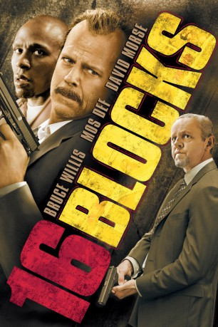
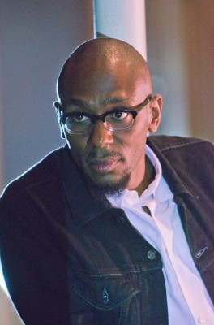
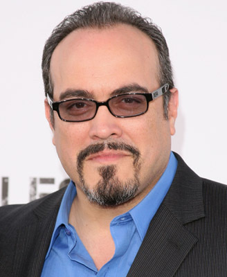
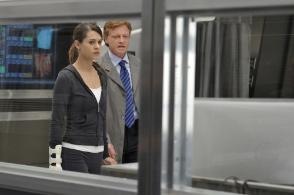
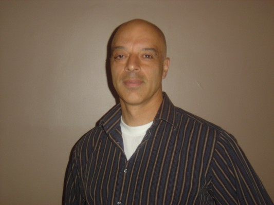
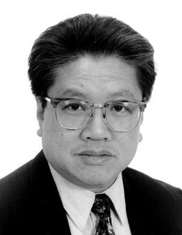

#1495 16 Blocks
 
 IMDB-Wertung: 6.6 / 10
IMDB-Wertung: 6.6 / 10  Metascore: 63
Metascore: 63 
Seiner Trinkgewohnheiten und der frechen Klappe wegen ist der heruntergekommene New Yorker Cop Jack Mosley den Vorgesetzten schon seit geraumer Zeit ein Dorn im Auge. Nun soll der müde Veteran den farbigen Junggauner Eddie Bunker nur mal schnell die 16 Blocks vom Untersuchungsknast zum Gericht bringen, wo dieser dann seine als brisant eingestufte Aussage in einem Fall von Polizeikorruption machen soll. Doch wie durch Zufall finden sich allerhand Hindernisse am Wegesrand ...
Jahr: 2006
Dauer: 105 Minuten
FSK: 12
Land: Deutschland Studio: Warner Bros.Tonspuren: DD5.1 - ,
Untertitel: Deutsch, Englisch,
Auflösung: 720p (1280x528) Größe: 2201 MB
Genre: Action, Krimi, Drama, Thriller
Regisseur:  Richard Donner
Richard Donner
Drehbuch: Richard Wenk
Soundtrack: Klaus Badelt
Darsteller:
 Bruce Willis als Det. Jack Mosley
Bruce Willis als Det. Jack Mosley-  Yasiin Bey als Eddie Bunker
 David Morse als Det. Frank Nugent
David Morse als Det. Frank Nugent- Jenna Stern als Diane Mosley
 Casey Sander als Capt. Dan Gruber
Casey Sander als Capt. Dan Gruber-  David Zayas als Det. Robert Torres
- Robert Racki als Det. Jerry Shue
-  Patrick Garrow als Touhey
 Sasha Roiz als Kaller
Sasha Roiz als Kaller Conrad Pla als Ortiz
Conrad Pla als Ortiz Peter McRobbie als Mike Sheehan
Peter McRobbie als Mike Sheehan Robert Clohessy als Cannova
Robert Clohessy als Cannova Tig Fong als Briggs
Tig Fong als Briggs- Brenda Pressley als ADA MacDonald
 Kim Chan als Sam
Kim Chan als Sam- Carmen López als Gracie
- Scott McCord als Lieutenant Kincaid
 David Sparrow als Holding Cell Officer
David Sparrow als Holding Cell Officer-  Nick Alachiotis als Russian
 Danny Lima als Russian
Danny Lima als Russian- Efosa Otuomagie als Bus Driver
- Christina Orjalo als Little Girl on the Bus
- Richard Wenk als ADA's Detective
 Tom Wlaschiha als Bus Passenger
Tom Wlaschiha als Bus Passenger- Kameron Louangxay als Communications Tech
- Rob Wiethoff als Court Officer
-  Paul J.Q. Lee als Asian Store Owner
- Heather Dawn als The Juror
- Jim Lavin als Car Key Detective
- Beatriz Yuste als Subway Commuter
 Robert Bizik als Construction Worker , uncredited
Robert Bizik als Construction Worker , uncredited- Ed Cuffe als Pedestrian , uncredited
 Richard Donner als Man Holding a Birthday Cake , uncredited
Richard Donner als Man Holding a Birthday Cake , uncredited- Albert Duic als Paramedic , uncredited
- Marshall Factora als Juror , uncredited
- Eli Harris als Cab Driver , uncredited
- Kevin P. McCarthy als Person in Cab , uncredited
- Liam McGuckian als Nephew , uncredited
- Khalid Rivera als Pedestrian , uncredited
- Joe Rosario als Juror #4 , uncredited
- Talia Russo als Young Bride , uncredited
- Norman Schleiffer als Man in Park Feeding Pidgeons , uncredited
- Alex Scrymgeour als Cop , uncredited
 Joseph Siravo als District Attorney Haynes , uncredited
Joseph Siravo als District Attorney Haynes , uncredited Brian Smyj als Sniper , uncredited
Brian Smyj als Sniper , uncredited- Jeremy J. Sullivan als Court Officer , uncredited
- Svetlana Titova als Waitress , uncredited
- Joshua Tolby als Pedestrian , uncredited
- Schuster Vance als Detective , uncredited
- Sonny Vellozzi als Pedestrian , uncredited
Datei: X:\2006(A-F)\16 Blocks (2006, FSK12, 1280x528).mkv seit 11.07.2015
Festplatte: HD 2005(G-Z)-2006(A-Z)
 Es gibt insgesamt 56 Filme in der Gruppe '2006(A-F)'
Es gibt insgesamt 56 Filme in der Gruppe '2006(A-F)'